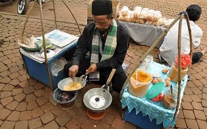

Apa itu Kerak Telor?

Mahakarya Kuliner Tradisional Asli Jakarta
Kerak Telor adalah makanan asli daerah Jakarta (Betawi), yang terbuat dari bahan-bahan utama beras ketan putih, telur ayam atau bebek, ebi (udang kering yang diasinkan dan disangrai kering), ditambah bawang merah goreng, lalu diberi bumbu halus khusus.
Beras Ketan Berkualitas
Dimasak pulen di atas wajan khusus tanpa minyak.
Serundeng & Ebi
Memberikan aroma harum khas yang menggugah selera.
Sejarah & Perjalanan Kerak Telor
Awal Mulai Ciptaan Tanpa Sengaja
Kerak telor lahir dari kreativitas masyarakat Betawi di kawasan Menteng, Batavia pada tahun 1920-an. Awalnya, warga lokal berupaya memanfaatkan berlimpahnya pohon kelapa dengan meracik adonan ketan dan bumbu tradisional yang dimasak di atas wajan tanpa minyak.
Menjadi Hidangan Mewah & Ikonik
Pada masa kepemimpinan Gubernur Ali Sadikin, keberadaan Kerak Telor mulai diangkat dan dipromosikan sebagai identitas budaya Betawi. Kerak Telor saat itu menjadi santapan berkelas yang kerap dihidangkan dalam acara-acara formal Pemprov DKI Jakarta dan pesta rakyat.
Warisan Budaya yang Tetap Abadi
Makanan ini tidak hanya sekadar kuliner lezat, melainkan lambang kehangatan dan keragaman budaya Batavia. Hingga saat ini, Kerak Telor menjadi kuliner wajib yang paling dicari setiap perayaan Hari Ulang Tahun Jakarta maupun event tahunan Pekan Raya Jakarta (PRJ).


Rekomendasi Tempat Kerak Telor
Beberapa tempat di Jakarta yang dapat dikunjungi untuk menikmati kerak telor khas Betawi.
Kerak Telor Bang Doel
Alamat: Jl. Pintu Air Raya No. 68, Ps. Baru, Sawah Besar, Jakarta Pusat
Range Harga: IDR 25.000 - IDR 50.000
Kerak Telor Depan Ragusa
Alamat: Jl. Veteran I (Depan Es Krim Ragusa),Gambir, Jakarta Pusat
Range Harga: IDR 25.000 - IDR 35.000
Kerak Telor Bang Roy Ancol
Alamat:Pantai Lagoon, Jl. Lodan Timur,Ancol, Pademangan, Jakarta Utara
Range Harga: IDR 25.000 - IDR 35.000
Kerak Telor Bang Ade (Koja)
Alamat: Jl. Labu No. 9, Lagoa, Koja, Jakarta Utara
Range Harga: IDR 20.000 - IDR 30.000
Kerak Telor Bang Dhory
Alamat: Jl. Letjen M.T. Haryono Kav. 30, Tebet Timur, Tebet, Jakarta Selatan
Range Harga: IDR 20.000 - IDR 30.000
Kerak Telor Khas Betawi Al Aziz
Alamat: Jl. Tebet Barat Dalam Raya (Depan SMK 32), Tebet, Jakarta Selatan
Range Harga: IDR 20.000 - IDR 30.000
Kerak Telor Tunas Betawi
Alamat: Jl. H. Nasir No. 28C, Srengseng, Kembangan, Jakarta Barat
Range Harga: IDR 25.000 - IDR 50.000
Kerak Telor Bang Ade (Ujung Menteng)
Alamat: Jl. Satria I No. 261, Ujung Menteng,Cakung, Jakarta Timur
Range Harga:IDR 20.000 - IDR 30.000
Kerak Telor Bang Roy (Pulo Gebang)
Alamat: Jl. Swadaya Pos, Pulo Gebang, Cakung, Jakarta Timur
Range Harga: IDR 20.000 - IDR 30.000
Kerak Telor Mpok Ayu
Alamat: Jl. Prumpung Barat, Rawa Bunga,Jatinegara, Jakarta Timur
Range Harga: IDR 20.000 - IDR 30.000